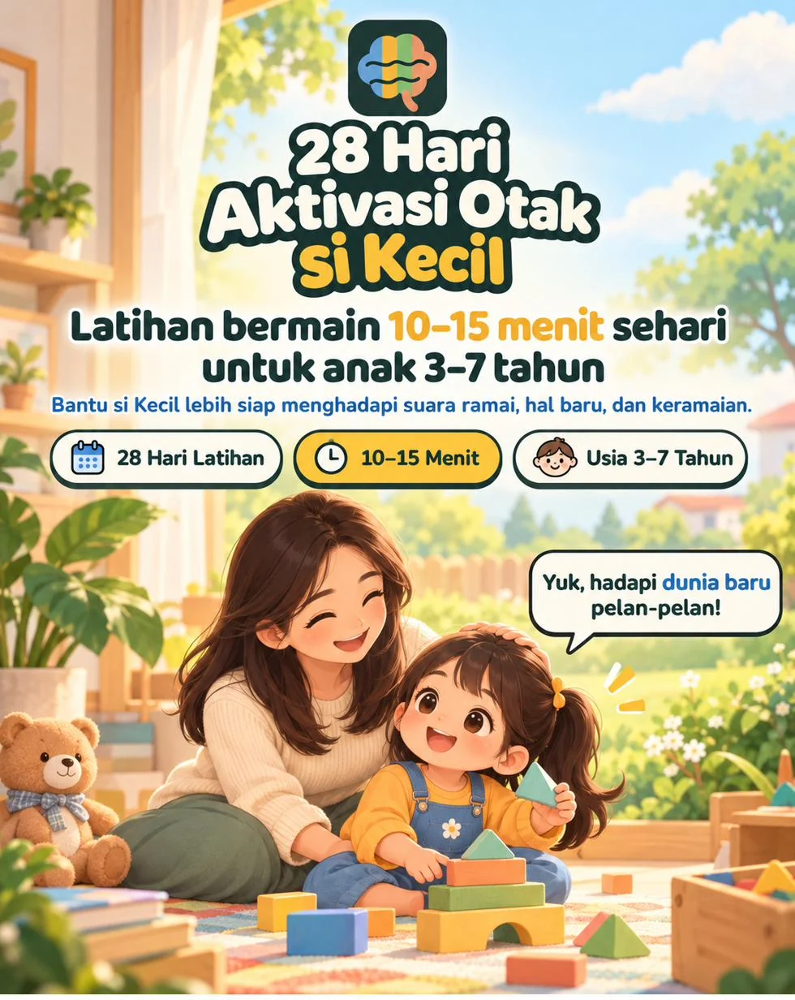
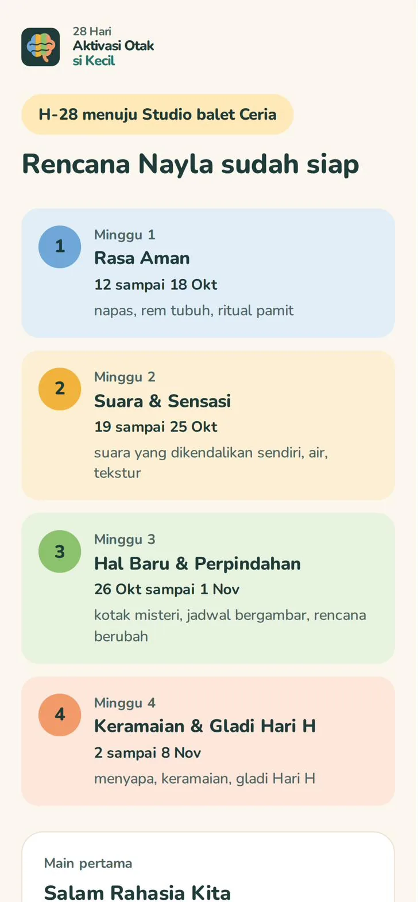
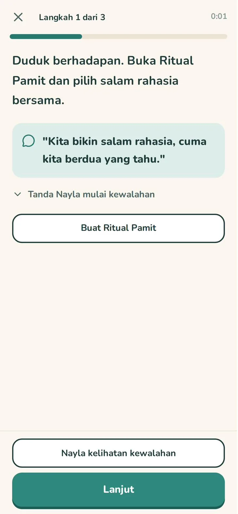
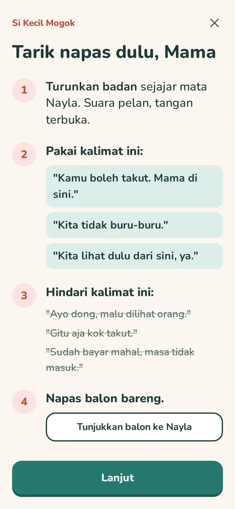
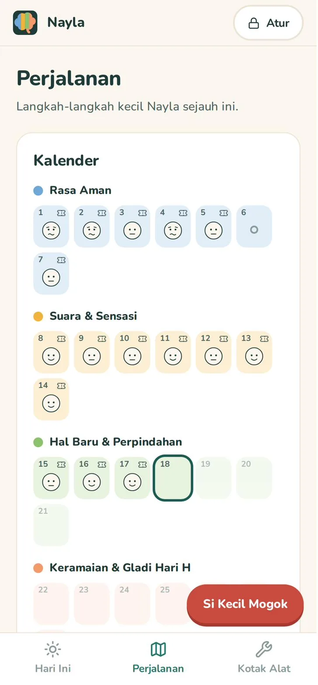
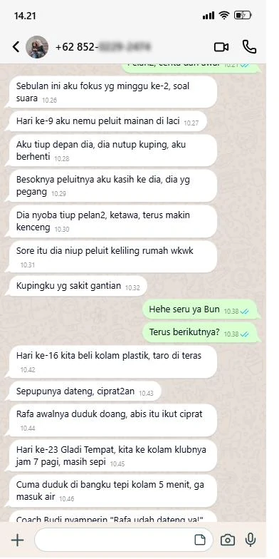
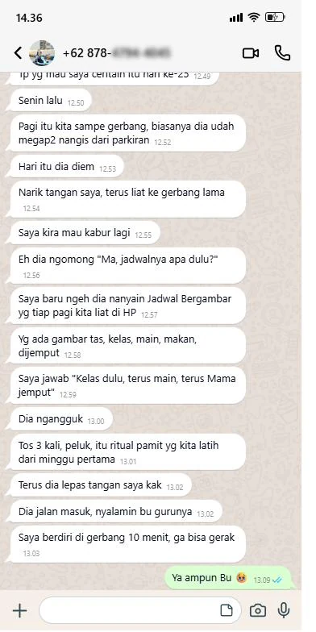
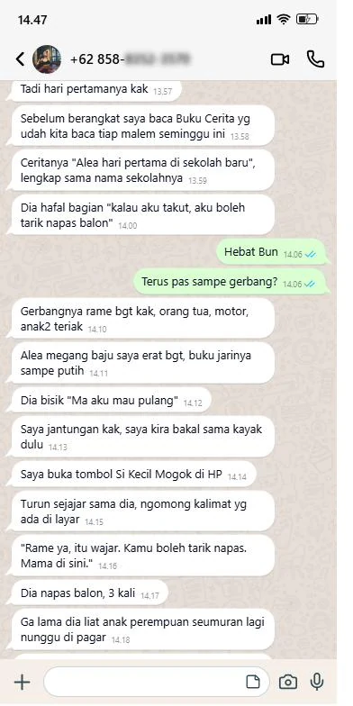

Untuk anak 3 sampai 7 tahun

Dia sendiri yang minta ikut les, atau semangat diundang ke ulang tahun temannya. Tapi di depan pintu, badannya membeku: menempel ke kamu, menutup telinga, minta pulang. 28 Hari Aktivasi Otak si Kecil adalah web app yang memandu kamu memainkan latihan 10 sampai 15 menit sehari, disusun mundur dari hari yang ditunggu, supaya si Kecil punya kesempatan terbaik untuk melangkah masuk sendiri.
Dibuka dari browser HP, tablet, atau laptop. Tanpa install, tanpa akun.
“Aku nggak mau masuk...”
Kelas barunya sudah dibayar, dan dia sendiri yang minta. Tapi sampai di depan pintu, dia menggenggam ujung bajumu, membenamkan wajah di perutmu, lalu menangis minta pulang. Kamu minta maaf ke gurunya dan bilang mungkin lain kali.
“Ma, rame banget. Pulang yuk.”
Seminggu sebelumnya dia semangat soal ulang tahun temannya. Begitu masuk tempat bermain yang riuh, dia mundur ke belakangmu dan menutup telinga. Ibu-ibu lain melirik, dan kamu bilang dia cuma lagi capek.
“Mama jangan pergi.”
Di gerbang sekolah atau pinggir kolam renang, dia memegang bajumu erat-erat. Akhirnya kamu ikut masuk kelas. Dan di tempat baru berikutnya, kejadiannya terulang lagi.
Tiga adegan ini kelihatan beda. Akarnya sama, dan bukan karena anakmu salah atau kamu kurang sabar.
Suara riuh, orang baru, tempat yang belum pernah dia lihat, pindah dari satu kegiatan ke kegiatan lain. Buat otak kecil yang belum terlatih, itu terlalu banyak sekaligus, jadi badannya mogok. Dibujuk dan diberi pengertian saja belum cukup. Yang dia butuhkan adalah latihan yang bertahap, lewat main.
28 Hari Aktivasi Otak si Kecil mengubah latihan itu jadi rencana harian yang tinggal kamu ikuti.
Si Kecil yang pegang kendali. Ada kartu Stop, dan permintaannya untuk berhenti selalu dihormati.
Kamu isi tanggal les pertama, ulang tahun teman, atau hari pertama sekolah. App membagi latihannya ke belakang dari tanggal itu.
Sebelum suara ramai dan tempat baru, dia dulu punya salam rahasia dan napas balon yang bisa dipakai di mana saja.
Satu permainan sehari.
10 sampai 15 menit. Bukan target besar, tapi langkah kecil yang diulang.
Naik satu per satu. Si Kecil tidak diloncatkan ke keramaian sebelum siap.
Kodenya ada di Panduan Akses di emailmu. Cukup sekali, setelah itu tersimpan di perangkat.
Isi nama dan tanggal hari yang ditunggu, lalu jawab 16 pertanyaan Peta Pemicu. App langsung menyusun rencana 28 harinya. Belum ada hari khusus? Mulai dari latihan umum dulu.
Satu permainan, 10 sampai 15 menit. App membacakan langkahnya satu per satu, jadi kamu tidak perlu menghafal apa pun.
Peta Pemicu dan Rencana 28 Hari
Enam belas pertanyaan tentang suara, keramaian dan orang baru, hal baru, dan berpisah dari Mama. Hasilnya peta pemicu si Kecil, lalu rencana empat minggu yang porsinya menyesuaikan, dihitung mundur dari Hari H.

Sesi Main
Tiap hari satu permainan, dibacakan langkah demi langkah. Kalau si Kecil kelihatan kewalahan, ada tombol untuk memakai versi yang lebih ringan atau berhenti dulu. Selesai main, dia mengisi Termometer Berani dengan lima wajah.

Si Kecil Mogok
Tombol merah ini selalu terlihat. Satu ketukan, dan app menuntunmu empat langkah: turunkan badan sejajar mata si Kecil, kalimat yang boleh dipakai, kalimat yang sebaiknya dihindari, lalu napas balon bareng.

Perjalanan
Kalender 28 hari dengan wajah Termometer Berani, grafik Rapor, dan Jurnal Momen Pertama: satu kalimat dan satu foto untuk tiap momen yang membuatmu terharu. Kalau si Kecil berhasil melangkah masuk di Hari H, ada Piagam Berani atas namanya.

Dibuka dari langkah permainan, atau kapan pun kamu butuh.
Memetakan apa yang paling berat buat si Kecil, menyusun rencana latihan bermain 28 hari mundur dari Hari H, menuntunmu langkah demi langkah di tiap sesi, menyiapkan alat untuk di rumah dan menjelang hari itu, dan mencatat langkah kecilnya.
Pengobatan, dokter, atau pengganti psikolog anak dan dokter tumbuh kembang. App ini tidak menjanjikan anak pasti berani atau pasti tidak menangis, dan tidak menilai kondisi anakmu. Kalau ada hal yang membuatmu khawatir, bicarakan dengan psikolog anak atau dokter tumbuh kembang.
| Dibujuk dan dipaksa | Artikel dan video parenting | Kelas sensory play | 28 Hari Aktivasi Otak | |
|---|---|---|---|---|
| Yang dikerjakan | Menunggu dia berubah | Membaca, lalu menebak sendiri | Bermain bersama di studio | Latihan main bertahap di rumah |
| Tahu mulai dari mana | Tidak ada | Disuruh bertahap, tanpa langkah harian | Tergantung kelas | Peta Pemicu dan rencana 28 hari |
| Nyambung ke Hari H | Tidak | Tidak | Tidak | Disusun mundur dari tanggalnya |
| Saat dia mogok di tempat | Dipaksa, atau pulang | Dibaca setelah kejadian | Tidak ada | Tombol Si Kecil Mogok, langkah demi langkah |
| Kapan dan biaya | Gratis, tapi melelahkan | Gratis | Sekitar Rp175.000 sampai Rp285.000 per sesi | Kapan saja, Rp127.000 |
Geser untuk melihat cerita lainnya. Nomor disensor untuk menjaga privasi.



Satu sesi kelas sensory play saja sekitar Rp175.000 sampai Rp285.000. 28 Hari Aktivasi Otak si Kecil memandu 28 hari latihan di rumah, dan bisa dipakai untuk lebih dari satu anak.
Sekitar Rp4.500 per hari selama 28 hari. Semua fitur langsung terbuka, tanpa paket basic dan premium.
Panduan Akses berisi kode masuk dikirim ke email yang kamu pakai saat order.
Bisa pakai QRIS, transfer bank, atau e-wallet.
Klik link biru yang diawali drive.google.com. Bukan tombol "Unduh Produk". Kalau belum ada di kotak masuk, cek folder Spam atau Promosi.
Buka aplikasinya dari Panduan Akses, masukkan kode, kenalkan si Kecil, lalu mulai main.
Tenang, kamu cuma salah klik. Balik ke email yang sama, lalu:
Kamu sudah membujuk, memberi pengertian, bahkan ikut duduk di dalam kelas. Yang belum pernah dicoba: melatih otaknya pelan-pelan lewat main, jauh sebelum hari itu tiba. Bunda tidak perlu menyiapkan apa pun, app-nya yang membacakan langkahnya.
Hari pertamanya cuma satu salam rahasia.
Dibuka dari browser HP, tablet, atau laptop. Tanpa install, tanpa akun.